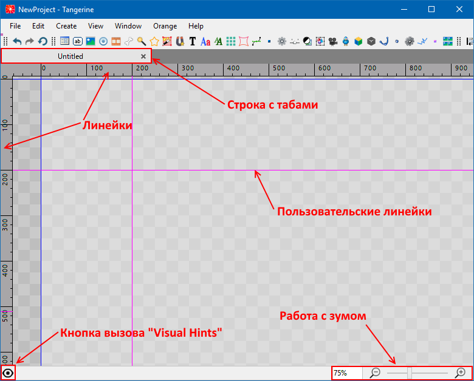

Окно "Viewport"

Окно "Viewport" служит для отображения текущей сцены. Рабочая область состоит из вкладок, которые соответствуют открытым сценам. Звездочка возле названия вкладки означает, что в сцене есть несохраненные изменения.
В рабочей области есть отображение различного вида линеек и границ. Они дифференциируются цветом:
- Размеры и границы текущего контейнера (синие)
- Сохраненные пользовательские границы/линейки (вызванные View -> Rulers) (бирюзовые)
- Несохраненные пользовательские границы/линейки (сохранить можно в View -> Rulers) (фиолетовые)
Линейки по краям экрана можно отключить сочетанием клавиш Ctrl + Alt + R
В окно Viewport работает drag & drop для текстур, что позволяет создавать "на лету" Image, Tiled Image, Distortion Mesh, Nine Grid
Снизу окна вьюпорта есть строка статуса, где можно изменять отзум на активной сцене и вкл/выкл. панель Visual Hints.